CODING AGENTS AS PIXEL WORLD MODELS
traex/DeepSeek-V4.1-Flash · 0108
点击播放 · 原生 RGB 像素
逐轮保存的候选
回放视频、检查图与代码变化。
每份候选均可单独播放。实际图片检查记录在下方工具轨迹中。
候选 01播放与检查图
点击播放 · 原生 RGB 像素
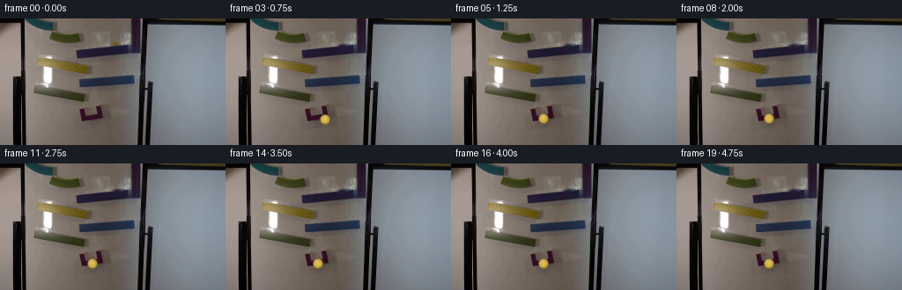
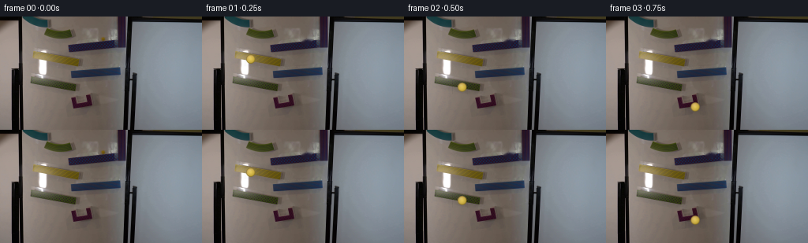
展开代码变化
--- 上一保存版本
+++ 本次保存版本
@@ -0,0 +1,213 @@
+from pathlib import Path
+
+import cv2
+import numpy as np
+from PIL import Image
+
+import artifact_io
+
+
+CASE_DIR = Path(__file__).resolve().parent
+N_FRAMES = 20
+FPS = 4
+
+
+def clean_plate(image):
+ """Remove the stationary marble while preserving the printed ramp."""
+ plate = image.copy()
+ mask = np.zeros(image.shape[:2], np.uint8)
+ cv2.ellipse(mask, (132, 28), (8, 8), 0, 0, 360, 255, -1)
+ return cv2.inpaint(plate, mask, 3, cv2.INPAINT_TELEA)
+
+
+def catmull_rom(points, samples_per_segment=24):
+ pts = np.asarray(points, np.float32)
+ padded = np.vstack((pts[0], pts, pts[-1]))
+ pieces = []
+ for i in range(1, len(padded) - 2):
+ p0, p1, p2, p3 = padded[i - 1 : i + 3]
+ t = np.linspace(0.0, 1.0, samples_per_segment, endpoint=False)[:, None]
+ t2, t3 = t * t, t * t * t
+ curve = 0.5 * (
+ 2.0 * p1
+ + (-p0 + p2) * t
+ + (2.0 * p0 - 5.0 * p1 + 4.0 * p2 - p3) * t2
+ + (-p0 + 3.0 * p1 - 3.0 * p2 + p3) * t3
+ )
+ pieces.append(curve)
+ pieces.append(pts[-1:])
+ return np.vstack(pieces)
+
+
+def make_path():
+ # The keypoints follow the centerline of each ramp and bridge the small
+ # physical gaps with short, nearly vertical drops.
+ waypoints = [
+ (130.5, 27.3),
+ (116.0, 31.0),
+ (102.0, 35.5),
+ (89.0, 40.8),
+ (84.0, 48.8),
+ (70.0, 52.2),
+ (54.0, 56.0),
+ (43.0, 58.8),
+ (39.5, 68.0),
+ (39.0, 82.8),
+ (55.0, 86.8),
+ (76.0, 90.2),
+ (96.0, 93.0),
+ (93.5, 101.0),
+ (94.0, 112.0),
+ (104.0, 116.2),
+ (117.0, 113.2),
+ (118.0, 105.5),
+ (111.0, 113.0),
+ (105.0, 114.0),
+ ]
+ path = catmull_rom(waypoints, 30)
+ delta = np.diff(path, axis=0)
+ distance = np.r_[0.0, np.cumsum(np.linalg.norm(delta, axis=1))]
+ return path, distance
+
+
+def time_profile(distance):
+ """Accelerate gently, coast across the drops, then settle in the catcher."""
+ u = distance / distance[-1]
+ # Smooth monotone progress with brief pauses at the two shelf transitions.
+ t = 0.08 + 0.84 * (0.56 * u + 0.44 * u * u)
+ t -= 0.035 * np.exp(-((u - 0.25) / 0.025) ** 2)
+ t -= 0.025 * np.exp(-((u - 0.58) / 0.025) ** 2)
+ t -= 0.050 * np.exp(-((u - 0.78) / 0.025) ** 2)
+ t = np.maximum.accumulate(t)
+ t -= t[0]
+ t /= t[-1]
+ return 0.08 + 0.80 * t
+
+
+def interpolate_state(path, distance, times, frame_time):
+ phase = np.clip(frame_time, 0.0, times[-1])
+ target = np.interp(phase, times, distance)
+ idx = int(np.searchsorted(distance, target))
+ idx = min(idx, len(distance) - 1)
+ if idx == 0:
+ return path[0], np.zeros(2, np.float32)
+ lo, hi = idx - 1, idx
+ span = distance[hi] - distance[lo]
+ alpha = 0.0 if span == 0 else (target - distance[lo]) / span
+ position = path[lo] * (1.0 - alpha) + path[hi] * alpha
+ tangent = path[hi] - path[lo]
+ tangent /= max(np.linalg.norm(tangent), 1e-6)
+ speed = 0.0 if phase < times[0] else 1.0
+ return position, tangent * speed
+
+
+def draw_marble(image, center, velocity, scale=6):
+ """Composite a small glass sphere with soft shading and contact shadow."""
+ h, w = image.shape[:2]
+ cx, cy = center
+ radius = 5.4
+ pad = 9
+ x0 = max(0, int(np.floor(cx - pad)))
+ y0 = max(0, int(np.floor(cy - pad)))
+ x1 = min(w, int(np.ceil(cx + pad)))
+ y1 = min(h, int(np.ceil(cy + pad)))
+ if x1 <= x0 or y1 <= y0:
+ return image
+
+ # Shadow is offset down and toward the lower side of the moving marble.
+ sw, sh = (x1 - x0) * scale, (y1 - y0) * scale
+ yy, xx = np.mgrid[0:sh, 0:sw]
+ px = x0 + (xx + 0.5) / scale
+ py = y0 + (yy + 0.5) / scale
+ shadow_dx = 0.9 + 0.35 * np.clip(velocity[0], -1.0, 1.0)
+ shadow_dy = 2.0 + 0.35 * np.clip(velocity[1], -1.0, 1.0)
+ sr = np.sqrt(((px - cx - shadow_dx) / (radius * 1.20)) ** 2 +
+ ((py - cy - shadow_dy) / (radius * 0.62)) ** 2)
+ shadow_alpha = np.clip((1.0 - sr) * 0.34, 0.0, 1.0)
+ shadow_alpha = cv2.GaussianBlur(shadow_alpha.astype(np.float32), (0, 0), 2.2 * scale)
+ shadow_alpha = shadow_alpha.reshape(y1 - y0, scale, x1 - x0, scale).mean((1, 3))
+
+ patch = image[y0:y1, x0:x1].astype(np.float32)
+ patch *= (1.0 - shadow_alpha[..., None] * 0.48)
+
+ # Supersampled circle mask and radial glass shading.
+ d = np.sqrt((px - cx) ** 2 + (py - cy) ** 2)
+ aa = np.clip((radius + 0.45 - d) * scale, 0.0, 1.0)
+ aa = aa.reshape(y1 - y0, scale, x1 - x0, scale).mean((1, 3))
+ nx = np.clip((px - cx) / radius, -1.0, 1.0)
+ ny = np.clip((py - cy) / radius, -1.0, 1.0)
+ radial = np.clip(np.sqrt(nx * nx + ny * ny), 0.0, 1.0)
+
+ # Yellow glass, darker toward the edge, with a cool reflected rim.
+ light = np.clip(0.56 - 0.33 * nx - 0.50 * ny, 0.0, 1.0)
+ yellow = np.empty((*d.shape, 3), np.float32)
+ yellow[..., 0] = 228 - 38 * radial + 16 * light
+ yellow[..., 1] = 202 - 42 * radial + 12 * light
+ yellow[..., 2] = 72 + 34 * light - 22 * radial
+
+ # Broad window reflection at upper left.
+ spec = np.clip(1.0 - np.sqrt(((nx + 0.34) / 0.27) ** 2 +
+ ((ny + 0.38) / 0.20) ** 2), 0.0, 1.0)
+ spec = cv2.GaussianBlur(spec.astype(np.float32), (0, 0), 0.9 * scale)
+ spec = spec.reshape(y1 - y0, scale, x1 - x0, scale).mean((1, 3))
+ # A narrow secondary glint makes the sphere read as glossy glass.
+ glint = np.clip(1.0 - np.sqrt(((nx + 0.02) / 0.10) ** 2 +
+ ((ny + 0.48) / 0.08) ** 2), 0.0, 1.0)
+ glint = cv2.GaussianBlur(glint.astype(np.float32), (0, 0), 0.45 * scale)
+ glint = glint.reshape(y1 - y0, scale, x1 - x0, scale).mean((1, 3))
+ yellow = yellow.reshape(y1 - y0, scale, x1 - x0, scale, 3).mean((1, 3))
+ yellow = yellow * (1.0 - 0.62 * spec[..., None]) + 245.0 * 0.62 * spec[..., None]
+ yellow = yellow * (1.0 - 0.90 * glint[..., None]) + 255.0 * 0.90 * glint[..., None]
+
+ # Slightly darker circumference gives the transparent shell thickness.
+ rim = np.clip((radial - 0.72) / 0.28, 0.0, 1.0) ** 2
+ rim = rim.reshape(y1 - y0, scale, x1 - x0, scale).mean((1, 3))
+ yellow *= (1.0 - 0.30 * rim[..., None])
+ alpha = (aa * 0.94)[..., None]
+ patch = patch * (1.0 - alpha) + yellow * alpha
+ out = image.copy()
+ out[y0:y1, x0:x1] = np.clip(patch, 0, 255).astype(np.uint8)
+ return out
+
+
+def motion_trail(image, center, velocity):
+ """Add a faint directional smear only during the fastest ramp sections."""
+ speed = float(np.linalg.norm(velocity))
+ if speed < 0.55:
+ return image
+ out = image.astype(np.float32)
+ trail = np.zeros_like(out)
+ for fraction, opacity in ((0.22, 0.10), (0.42, 0.055)):
+ p = np.asarray(center) - velocity * fraction * 8.0
+ layer = out.copy()
+ layer = draw_marble(layer.astype(np.uint8), p, velocity * 0.3)
+ changed = np.abs(layer.astype(np.float32) - out).sum(2) > 0
+ trail[changed] += layer[changed].astype(np.float32) * opacity
+ mask = trail.sum(2) > 0
+ out[mask] = out[mask] * 0.94 + trail[mask] * 0.35
+ return np.clip(out, 0, 255).astype(np.uint8)
+
+
+def main():
+ original = np.asarray(Image.open(CASE_DIR / "first_frame.png").convert("RGB"))
+ plate = clean_plate(original)
+ path, distance = make_path()
+ times = time_profile(distance)
+
+ frames = []
+ for i in range(N_FRAMES):
+ if i == 0:
+ frames.append(original.copy())
+ continue
+ frame_time = i / FPS
+ position, velocity = interpolate_state(path, distance, times, frame_time)
+ frame = motion_trail(plate, position, velocity)
+ frame = draw_marble(frame, position, velocity)
+ frames.append(frame)
+
+ frames = np.stack(frames).astype(np.uint8)
+ artifact_io.save(frames, CASE_DIR)
+
+
+if __name__ == "__main__":
+ main()
候选 02播放与检查图
点击播放 · 原生 RGB 像素

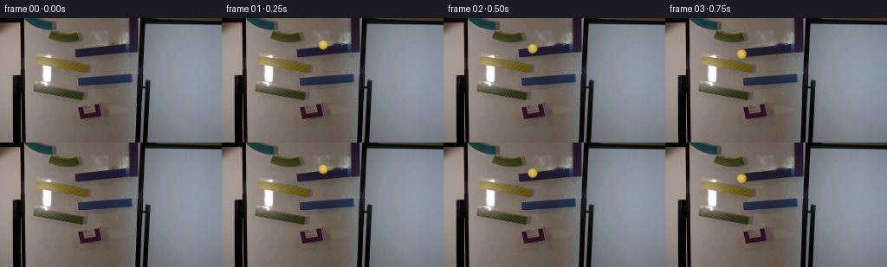
展开代码变化
--- 上一保存版本
+++ 本次保存版本
@@ -70,23 +70,16 @@
return path, distance
-def time_profile(distance):
- """Accelerate gently, coast across the drops, then settle in the catcher."""
- u = distance / distance[-1]
- # Smooth monotone progress with brief pauses at the two shelf transitions.
- t = 0.08 + 0.84 * (0.56 * u + 0.44 * u * u)
- t -= 0.035 * np.exp(-((u - 0.25) / 0.025) ** 2)
- t -= 0.025 * np.exp(-((u - 0.58) / 0.025) ** 2)
- t -= 0.050 * np.exp(-((u - 0.78) / 0.025) ** 2)
- t = np.maximum.accumulate(t)
- t -= t[0]
- t /= t[-1]
- return 0.08 + 0.80 * t
-
-
-def interpolate_state(path, distance, times, frame_time):
- phase = np.clip(frame_time, 0.0, times[-1])
- target = np.interp(phase, times, distance)
+def interpolate_state(path, distance, frame_index):
+ # Each target is the fraction of the path reached on that frame. The
+ # slightly uneven spacing gives the marble acceleration down each ramp.
+ progress = np.array([
+ 0.000, 0.055, 0.115, 0.180, 0.245, 0.315,
+ 0.390, 0.465, 0.530, 0.625, 0.710, 0.775,
+ 0.835, 0.885, 0.925, 0.952, 0.970, 0.984,
+ 0.994, 1.000,
+ ])
+ target = np.interp(frame_index, np.arange(N_FRAMES), progress) * distance[-1]
idx = int(np.searchsorted(distance, target))
idx = min(idx, len(distance) - 1)
if idx == 0:
@@ -97,8 +90,7 @@
position = path[lo] * (1.0 - alpha) + path[hi] * alpha
tangent = path[hi] - path[lo]
tangent /= max(np.linalg.norm(tangent), 1e-6)
- speed = 0.0 if phase < times[0] else 1.0
- return position, tangent * speed
+ return position, tangent
def draw_marble(image, center, velocity, scale=6):
@@ -192,15 +184,13 @@
original = np.asarray(Image.open(CASE_DIR / "first_frame.png").convert("RGB"))
plate = clean_plate(original)
path, distance = make_path()
- times = time_profile(distance)
frames = []
for i in range(N_FRAMES):
if i == 0:
frames.append(original.copy())
continue
- frame_time = i / FPS
- position, velocity = interpolate_state(path, distance, times, frame_time)
+ position, velocity = interpolate_state(path, distance, i)
frame = motion_trail(plate, position, velocity)
frame = draw_marble(frame, position, velocity)
frames.append(frame)
候选 03播放与检查图
点击播放 · 原生 RGB 像素

展开代码变化
--- 上一保存版本
+++ 本次保存版本
@@ -133,28 +133,30 @@
# Yellow glass, darker toward the edge, with a cool reflected rim.
light = np.clip(0.56 - 0.33 * nx - 0.50 * ny, 0.0, 1.0)
yellow = np.empty((*d.shape, 3), np.float32)
- yellow[..., 0] = 228 - 38 * radial + 16 * light
- yellow[..., 1] = 202 - 42 * radial + 12 * light
- yellow[..., 2] = 72 + 34 * light - 22 * radial
+ yellow[..., 0] = 236 - 31 * radial + 12 * light
+ yellow[..., 1] = 213 - 39 * radial + 9 * light
+ yellow[..., 2] = 83 + 24 * light - 25 * radial
+ # The darker lower-right side shows the thickness of the glass.
+ yellow[..., 2] += np.clip(0.48 - 0.36 * nx - 0.24 * ny, 0.0, 1.0) * 18
# Broad window reflection at upper left.
- spec = np.clip(1.0 - np.sqrt(((nx + 0.34) / 0.27) ** 2 +
- ((ny + 0.38) / 0.20) ** 2), 0.0, 1.0)
- spec = cv2.GaussianBlur(spec.astype(np.float32), (0, 0), 0.9 * scale)
+ spec = np.clip(1.0 - np.sqrt(((nx + 0.33) / 0.23) ** 2 +
+ ((ny + 0.39) / 0.16) ** 2), 0.0, 1.0)
+ spec = cv2.GaussianBlur(spec.astype(np.float32), (0, 0), 0.65 * scale)
spec = spec.reshape(y1 - y0, scale, x1 - x0, scale).mean((1, 3))
# A narrow secondary glint makes the sphere read as glossy glass.
- glint = np.clip(1.0 - np.sqrt(((nx + 0.02) / 0.10) ** 2 +
- ((ny + 0.48) / 0.08) ** 2), 0.0, 1.0)
- glint = cv2.GaussianBlur(glint.astype(np.float32), (0, 0), 0.45 * scale)
+ glint = np.clip(1.0 - np.sqrt(((nx + 0.03) / 0.075) ** 2 +
+ ((ny + 0.48) / 0.065) ** 2), 0.0, 1.0)
+ glint = cv2.GaussianBlur(glint.astype(np.float32), (0, 0), 0.30 * scale)
glint = glint.reshape(y1 - y0, scale, x1 - x0, scale).mean((1, 3))
yellow = yellow.reshape(y1 - y0, scale, x1 - x0, scale, 3).mean((1, 3))
yellow = yellow * (1.0 - 0.62 * spec[..., None]) + 245.0 * 0.62 * spec[..., None]
yellow = yellow * (1.0 - 0.90 * glint[..., None]) + 255.0 * 0.90 * glint[..., None]
# Slightly darker circumference gives the transparent shell thickness.
- rim = np.clip((radial - 0.72) / 0.28, 0.0, 1.0) ** 2
+ rim = np.clip((radial - 0.68) / 0.32, 0.0, 1.0) ** 2
rim = rim.reshape(y1 - y0, scale, x1 - x0, scale).mean((1, 3))
- yellow *= (1.0 - 0.30 * rim[..., None])
+ yellow *= (1.0 - 0.37 * rim[..., None])
alpha = (aa * 0.94)[..., None]
patch = patch * (1.0 - alpha) + yellow * alpha
out = image.copy()
候选 04播放与检查图

可观测工具轨迹
实际执行的命令与返回图片。
命令 1exit 0
/bin/bash -c "pwd && rg --files -g '"'!*__pycache__*'"' | sort"
命令 2exit 0
/bin/bash -c "printf '%s\\n' '--- prompt.txt ---'; sed -n '1,240p' prompt.txt; printf '%s\\n' '--- GENERATION_RULES.md ---'; sed -n '1,280p' GENERATION_RULES.md"
命令 3exit 0
/bin/bash -c 'file first_frame.png; identify first_frame.png 2>/dev/null || true; git status --short --branch 2>/dev/null || true'
命令 4exit 0
/bin/bash -c "sed -n '1,260p' artifact_io.py; printf '\\n--- player ---\\n'; sed -n '1,260p' player_template.html"
命令 5exit 0
/bin/bash -c "python - <<'PY'
from PIL import Image
im=Image.open('first_frame.png')
print(im.mode, im.size)
im.resize((1024,576), Image.Resampling.NEAREST).save('.tmp/first_nearest.png')
im.resize((1024,576), Image.Resampling.LANCZOS).save('.tmp/first_smooth.png')
PY"命令 6exit 0
/bin/bash -c "python - <<'PY'
from PIL import Image
im=Image.open('first_frame.png')
# label broad crops 8x
for name,box in [('upper',(20,0,180,80)),('mid',(20,40,180,115)),('lower',(30,75,150,135))]:
im.crop(box).resize(((box[2]-box[0])*6,(box[3]-box[1])*6),Image.Resampling.NEAREST).save('.tmp/'+name+'.png')
PY"命令 7exit 0
/bin/bash -c "python - <<'PY'
from PIL import Image
im=Image.open('first_frame.png')
box=(110,15,170,55)
im.crop(box).resize(((box[2]-box[0])*12,(box[3]-box[1])*12),Image.Resampling.NEAREST).save('.tmp/topright.png')
PY"命令 8exit 0
/bin/bash -c "python - <<'PY'
from PIL import Image, ImageDraw, ImageFont
im=Image.open('first_frame.png').resize((1024,576), Image.Resampling.NEAREST)
d=ImageDraw.Draw(im)
for x in range(0,256,10):
xx=x*4
d.line((xx,0,xx,576), fill=(255,0,255) if x%50==0 else (80,80,80), width=1)
if x%20==0:d.text((xx+2,2),str(x),fill=(255,255,0))
for y in range(0,144,10):
yy=y*4
d.line((0,yy,1024,yy), fill=(255,0,255) if y%50==0 else (80,80,80), width=1)
if y%20==0:d.text((2,yy+1),str(y),fill=(255,255,0))
im.save('.tmp/grid.png')
PY"命令 9exit 0
/bin/bash -c "python - <<'PY'
from PIL import Image
import numpy as np
from scipy.ndimage import label
im=np.array(Image.open('first_frame.png'))
r,g,b=im.transpose(2,0,1)
# yellow-ish candidate
m=(r>120)&(g>100)&(b<100)&((r.astype(int)+g)>b*2+100)
l,n=label(m)
for i in range(1,n+1):
ys,xs=np.where(l==i)
if len(xs)>=1:
print(len(xs), (xs.min(),ys.min(),xs.max(),ys.max()), tuple(np.mean(im[ys,xs],axis=0).astype(int)))
PY"命令 10exit 0
/bin/bash -c "python - <<'PY'
from PIL import Image
im=Image.open('first_frame.png')
# exact marble area and adjacent ramps, nearest 20x
box=(105,16,145,44)
im.crop(box).resize(((box[2]-box[0])*20,(box[3]-box[1])*20),Image.Resampling.NEAREST).save('.tmp/marble.png')
PY"命令 11exit 0
/bin/bash -c "find . -maxdepth 2 -type f -printf '%p %s bytes\\n' | sort; python - <<'PY' import importlib.util for m in ['numpy','PIL','cv2','scipy','skimage','torch','imageio','matplotlib']: print(m, bool(importlib.util.find_spec(m))) PY"
命令 12exit 0
/bin/bash -c "python - <<'PY'
from PIL import Image
import numpy as np
from scipy.ndimage import label
im=np.array(Image.open('first_frame.png')).astype(int)
# Print HSV-ish clusters from bright saturated pixels excluding black border and white bg
r,g,b=im.transpose(2,0,1)
mx=im.max(2); mn=im.min(2); sat=mx-mn
m=(sat>50)&(mx>70)
l,n=label(m)
comps=[]
for i in range(1,n+1):
ys,xs=np.where(l==i)
if len(xs)>=20:
comps.append((len(xs),xs.min(),ys.min(),xs.max(),ys.max(),tuple(np.median(im[ys,xs],0).astype(int))))
for row in sorted(comps,reverse=True)[:30]: print(row)
PY"命令 13exit 0
/bin/bash -c "python - <<'PY'
from PIL import Image
im=Image.open('first_frame.png')
for name,box in [('purple',(140,0,170,60)),('dotted',(80,24,165,48)),('yellow',(25,40,110,68)),('blue',(80,60,160,80)),('green',(25,70,110,98)),('u',(80,95,125,125))]:
im.crop(box).resize(((box[2]-box[0])*10,(box[3]-box[1])*10),Image.Resampling.NEAREST).save('.tmp/'+name+'2.png')
PY"命令 14exit 0
/bin/bash -c "python - <<'PY'
from PIL import Image
im=Image.open('first_frame.png')
for name,box in [('marbleroi',(115,18,145,43)),('marbleroi2',(110,15,150,50))]:
im.crop(box).resize(((box[2]-box[0])*24,(box[3]-box[1])*24),Image.Resampling.LANCZOS).save('.tmp/'+name+'.png')
PY"命令 15exit 0
/bin/bash -c "python - <<'PY'
from PIL import Image
import numpy as np
im=np.array(Image.open('first_frame.png')).astype(float)
# print rows/cols around marble, top luminance positions and chroma
for y in range(18,43):
vals=[]
for x in range(112,145):
r,g,b=im[y,x]
if max(r,g,b)-min(r,g,b)>35 and max(r,g,b)>90: vals.append((x,tuple(im[y,x].astype(int))))
if vals: print(y, vals)
PY"命令 16exit 0
/bin/bash -c "python - <<'PY'
from PIL import Image
import numpy as np
im=np.array(Image.open('first_frame.png')).astype(int)
r,g,b=im.transpose(2,0,1)
# dark blue dotted: b>r+15, b>g+5, b<150, r<80 maybe
m=(b>r+15)&(b>g+5)&(b<170)&(r<100)&(g<120)
for y in range(20,50):
xs=np.where(m[y])[0]
xs=xs[(xs>70)&(xs<170)]
if len(xs): print(y,xs.min(),xs.max(),len(xs))
PY"命令 17exit 0
/bin/bash -c "python - <<'PY'
from PIL import Image
import numpy as np
im=np.array(Image.open('first_frame.png')).astype(float)
# marble center estimate weighted by dark yellow within bounding box
ys,xs=np.mgrid[:144,:256]
roi=(xs>=112)&(xs<=145)&(ys>=18)&(ys<=44)
r,g,b=im.transpose(2,0,1)
w=np.clip((r+g-2*b-120)/100,0,1)*roi
print('sum',w.sum(),'centroid', (w*xs).sum()/w.sum(),(w*ys).sum()/w.sum())
# max local yellow
for y in range(20,40):
for x in range(118,142):
rr,gg,bb=im[y,x]
if rr+gg-2*bb>190: print(x,y,(rr,gg,bb),rr+gg-2*bb)
PY"命令 18exit 0
/bin/bash -c "python - <<'PY'
from PIL import Image
import numpy as np
im=np.array(Image.open('first_frame.png')).astype(int)
# candidates for dark blue ramp, each row segments
r,g,b=im.transpose(2,0,1)
for name,m in [
('blue',(b>r+8)&(b>g-2)&(b<170)&(r<130)),
('yellow',(r>80)&(g>70)&(b<80)&(r-b>40)&(g-b>30)),
('green',(g>r+5)&(g>b+15)&(g<170)),
('purple',(r>50)&(b>60)&(b>g+15)&(r>g+10)),
]:
print('\\n',name)
for y in range(0,144,4):
xs=np.where(m[y])[0]
xs=xs[(xs>20)&(xs<180)]
if len(xs)>=3:
print(y, xs.min(),xs.max(),len(xs))
PY"命令 19exit 1
/bin/bash -c "python generate.py && python - <<'PY'
import numpy as np
from PIL import Image
f=np.array(Image.open('frames/00.png'))
o=np.array(Image.open('first_frame.png'))
print('frame0 exact:',np.array_equal(f,o))
print('saved:', Image.open('inspection.png').size)
PY"命令 20exit 0
/bin/bash -c "python generate.py && python - <<'PY'
import numpy as np
from PIL import Image
f=np.array(Image.open('frames/00.png'))
o=np.array(Image.open('first_frame.png'))
print('frame0 exact:',np.array_equal(f,o))
PY"命令 21exit 0
/bin/bash -c "python - <<'PY'
from PIL import Image, ImageDraw
ims=[Image.open(f'frames/{i:02d}.png').crop((20,12,145,128)).resize((500,464),Image.Resampling.NEAREST) for i in range(20)]
sheet=Image.new('RGB',(1000,2320),(25,28,35))
d=ImageDraw.Draw(sheet)
for i,im in enumerate(ims):
x=(i%2)*500;y=(i//2)*232
sheet.paste(im,(x,y+20));d.text((x+5,y+3),f'{i:02d}',fill='white')
sheet.save('.tmp/sequence_zoom.png')
PY"命令 22exit 0
/bin/bash -c "python - <<'PY'
from PIL import Image
im=Image.open('frames/06.png')
im.crop((25,40,105,105)).resize((640,520),Image.Resampling.NEAREST).save('.tmp/f06zoom.png')
im=Image.open('frames/13.png')
im.crop((75,92,130,126)).resize((660,408),Image.Resampling.NEAREST).save('.tmp/f13zoom.png')
PY"命令 23exit 0
/bin/bash -c "python - <<'PY'
from PIL import Image
for i in [1,2,3,4,5,6,7,8,9,10,11,12,13,14,15,16,17,18,19]:
im=Image.open(f'frames/{i:02d}.png')
im.resize((1024,576),Image.Resampling.NEAREST).save(f'.tmp/f{i:02d}_big.png')
PY"命令 24exit 0
/bin/bash -c "python - <<'PY'
from PIL import Image
import numpy as np
# summarize each frame diff bbox from clean frame and center of yellow marble via local highlight
prev=None
for i in range(20):
im=np.array(Image.open(f'frames/{i:02d}.png')).astype(int)
if i==0: base=im; print(i,'base');continue
diff=np.abs(im-base).sum(2)>25
ys,xs=np.where(diff)
print(i, (xs.min(),ys.min(),xs.max(),ys.max()) if len(xs) else None)
PY"命令 25exit 0
/bin/bash -c "python - <<'PY'
from PIL import Image
import numpy as np
for i in [0,1,2,3,4,5,6,7,8,9,10,11,12,13,14,15,16,17,18,19]:
im=np.array(Image.open(f'frames/{i:02d}.png')).astype(int)
# bright glint near marble, plus yellow pixel centroid in ROI
r,g,b=im.transpose(2,0,1)
yy,xx=np.mgrid[:144,:256]
m=(r>150)&(g>130)&(b>80)&(b<190)&(xx>30)&(xx<150)&(yy>15)&(yy<125)
# high brightness likely glint
if m.sum():
print(i, m.sum(), round(xx[m].mean(),1), round(yy[m].mean(),1), tuple(im[yy[m],xx[m]].mean(0).astype(int)))
PY"命令 26exit 0
/bin/bash -c "python - <<'PY'
import generate
p,d=generate.make_path(); t=generate.time_profile(d)
for i in range(20):
pos,v=generate.interpolate_state(p,d,t,i/4)
print(i, tuple(round(float(z),1) for z in pos), round(float(t[i]) if i<len(t) else 0,3))
print('path',len(p),'dist',d[-1])
PY"命令 27exit 0
/bin/bash -c "python - <<'PY' import generate p,d=generate.make_path(); t=generate.time_profile(d) print(t[:5],t[-5:],t.min(),t.max()) for i in range(20): target=i/4 j=t.searchsorted(target) print(i, target, j, t[min(j,19)]) PY"
命令 28exit 0
/bin/bash -c "python generate.py && python - <<'PY'
import numpy as np
from PIL import Image
import generate
f=np.array(Image.open('frames/00.png')); o=np.array(Image.open('first_frame.png'))
print('frame0 exact:',np.array_equal(f,o))
p,d=generate.make_path()
for i in range(20):
pos,v=generate.interpolate_state(p,d,i)
print(i, tuple(round(float(z),1) for z in pos))
PY"命令 29exit 0
/bin/bash -c "python - <<'PY'
from PIL import Image
im=Image.open('first_frame.png')
# export exact full-res clean plate / key frames
for i in [5,7,10,14,19]:
Image.open(f'frames/{i:02d}.png').resize((1024,576),Image.Resampling.NEAREST).save(f'.tmp/v{i}.png')
PY"命令 30exit 0
/bin/bash -c 'ls .tmp/v*'
命令 31exit 0
/bin/bash -c "python generate.py && python - <<'PY'
import json
from pathlib import Path
import numpy as np
from PIL import Image
print('frame0', np.array_equal(np.array(Image.open('frames/00.png')),np.array(Image.open('first_frame.png'))))
for f in ['pixels.npz','inspection.png','transition_check.png','index.html']:
print(f, Path(f).stat().st_size)
z=np.load('pixels.npz')['pixels']
print('pixels',z.shape,z.dtype,int(z.min()),int(z.max()))
PY"命令 32exit 0
/bin/bash -c "python - <<'PY'
from pathlib import Path
from PIL import Image
import numpy as np, re
files=sorted(Path('frames').glob('*.png'))
print('frames',len(files), 'sizes',sorted({Image.open(f).size for f in files}), 'modes',sorted({Image.open(f).mode for f in files}))
print('exact first',np.array_equal(np.array(Image.open(files[0])),np.array(Image.open('first_frame.png'))))
s=Path('index.html').read_text()
print('html bytes',len(s),'has first payload','DATA' in s,'ends html',s.rstrip().endswith('</html>'))
print('npz shape',np.load('pixels.npz')['pixels'].shape)
PY
python -m py_compile generate.py"视觉工具实际返回图片 1

视觉工具实际返回图片 2
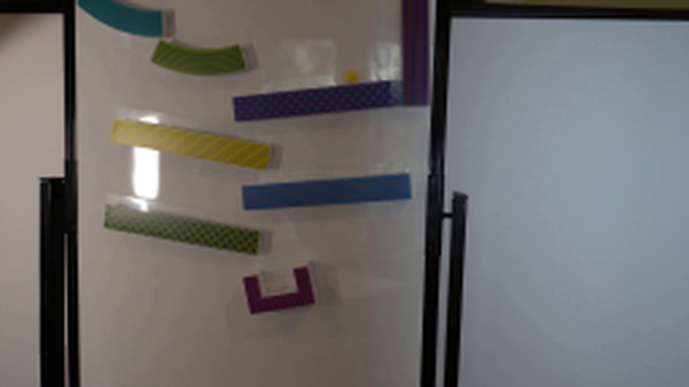
视觉工具实际返回图片 3
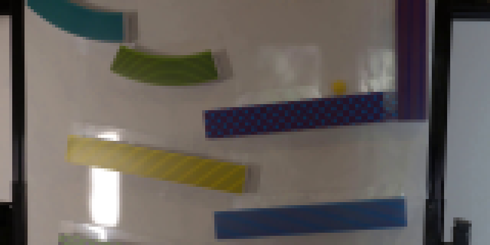
视觉工具实际返回图片 4
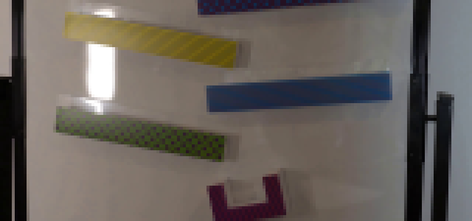
视觉工具实际返回图片 5
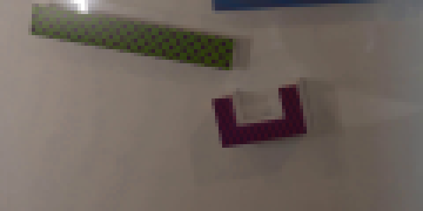
视觉工具实际返回图片 6
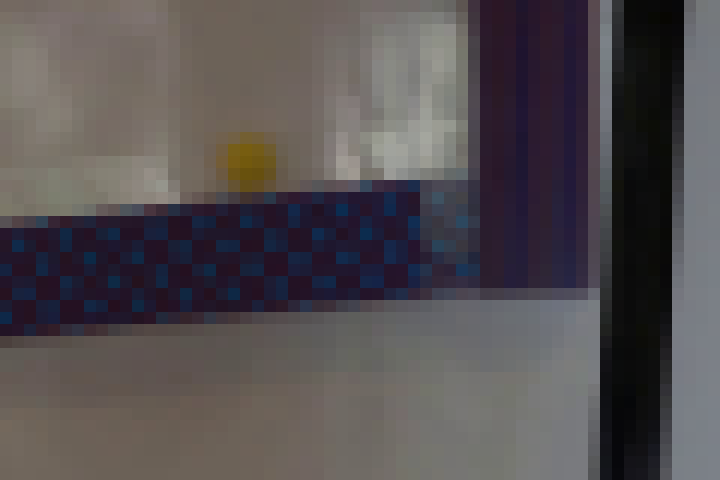
视觉工具实际返回图片 7
视觉工具实际返回图片 8
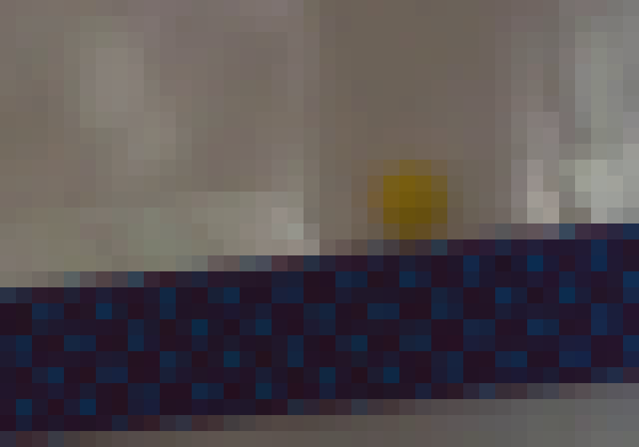
视觉工具实际返回图片 9
视觉工具实际返回图片 10
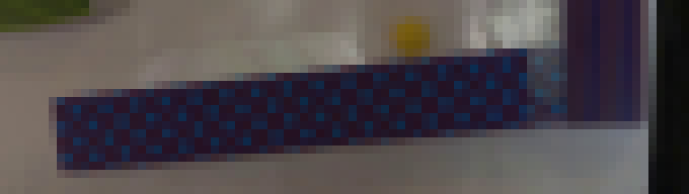
视觉工具实际返回图片 11
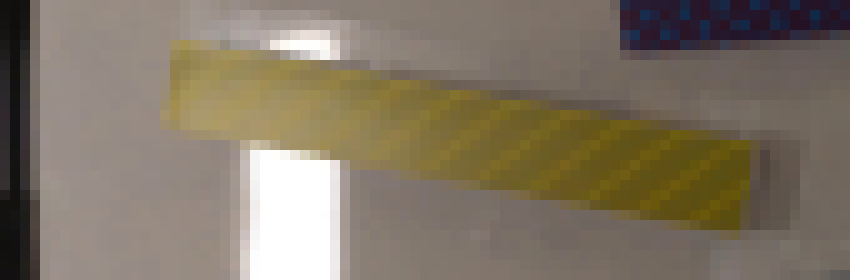
视觉工具实际返回图片 12
视觉工具实际返回图片 13
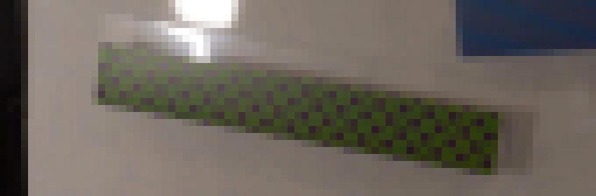
视觉工具实际返回图片 14
视觉工具实际返回图片 15
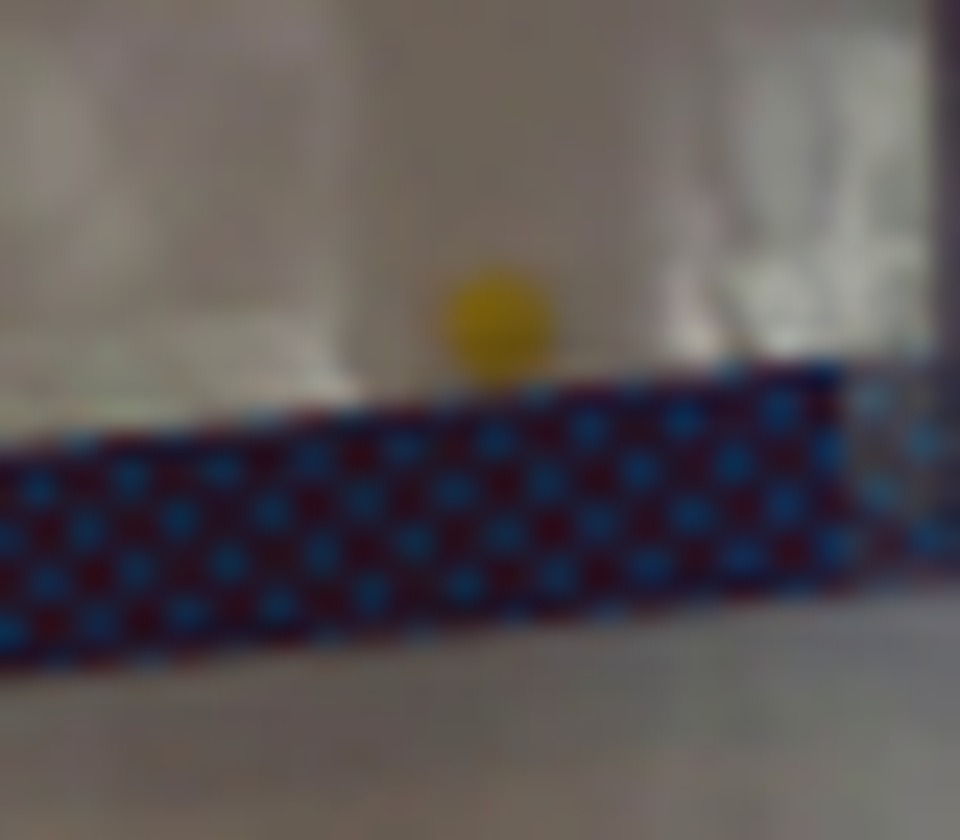
视觉工具实际返回图片 16

视觉工具实际返回图片 17
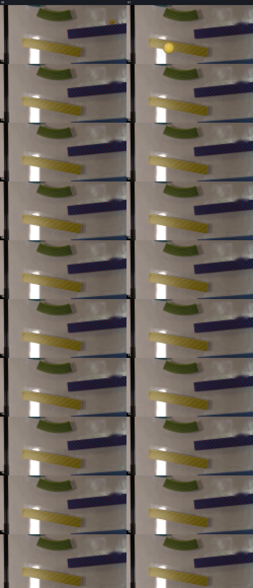
视觉工具实际返回图片 18
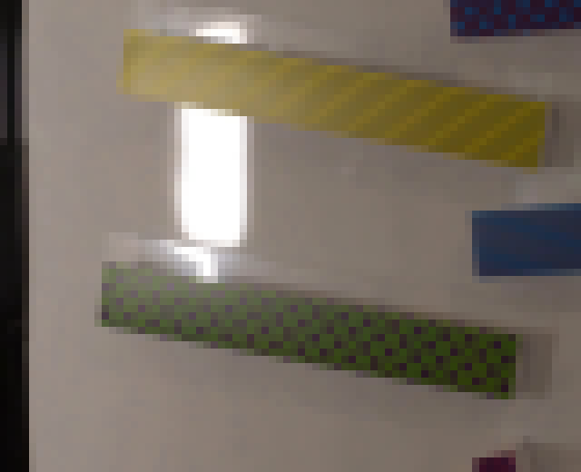
视觉工具实际返回图片 19
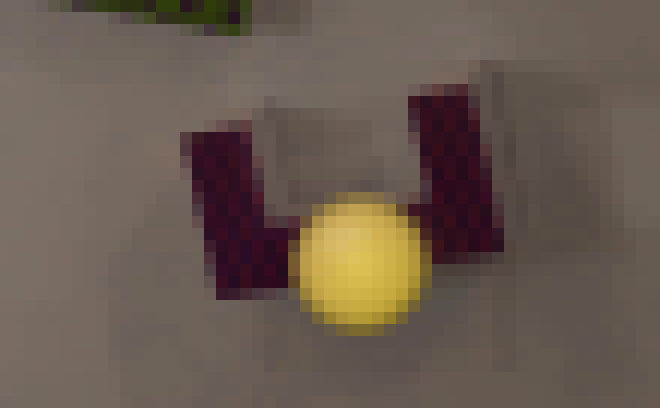
视觉工具实际返回图片 20
视觉工具实际返回图片 21

视觉工具实际返回图片 22

视觉工具实际返回图片 23

视觉工具实际返回图片 24

视觉工具实际返回图片 25
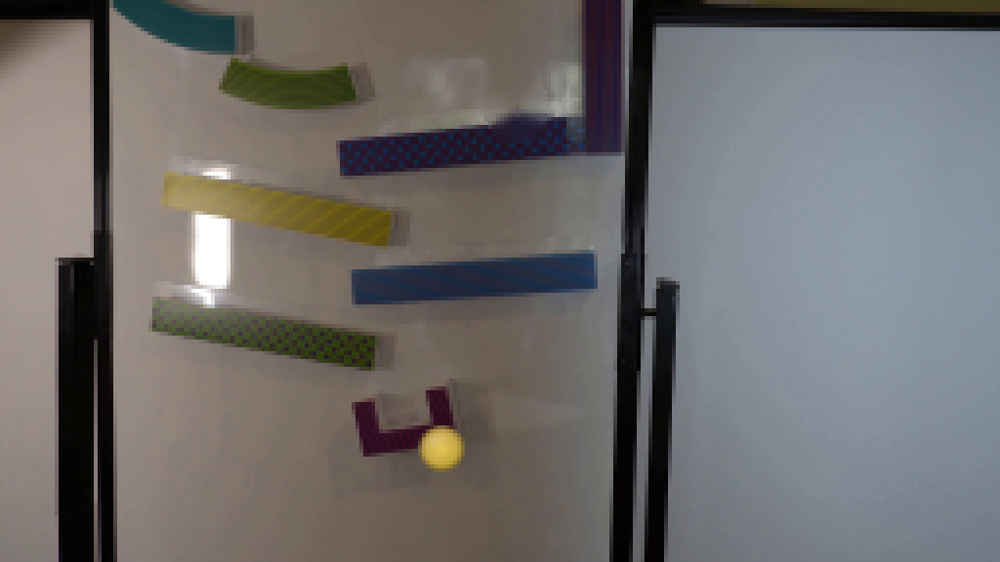
视觉工具实际返回图片 26

视觉工具实际返回图片 27
视觉工具实际返回图片 28
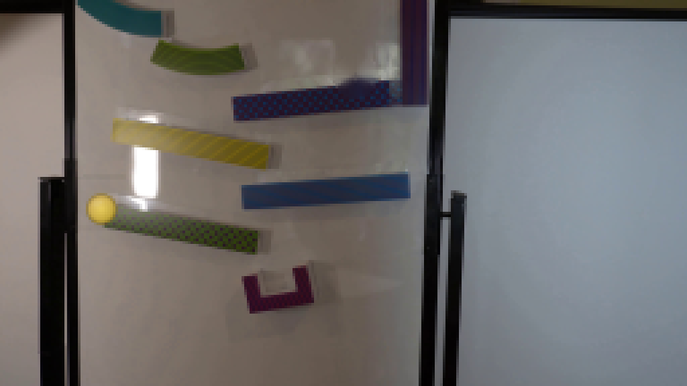
视觉工具实际返回图片 29
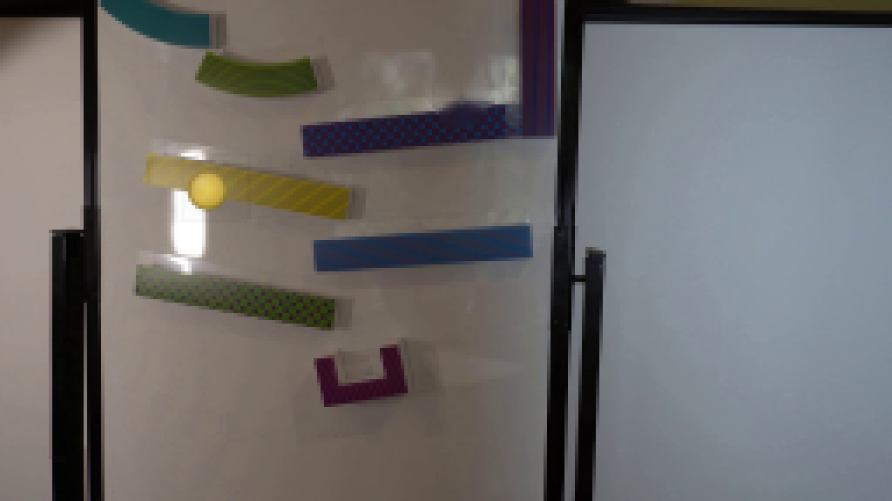
视觉工具实际返回图片 30
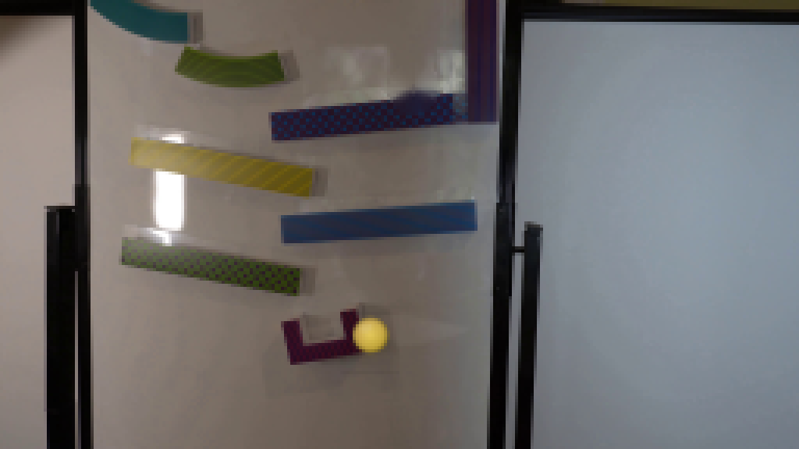
视觉工具实际返回图片 31

视觉工具实际返回图片 32
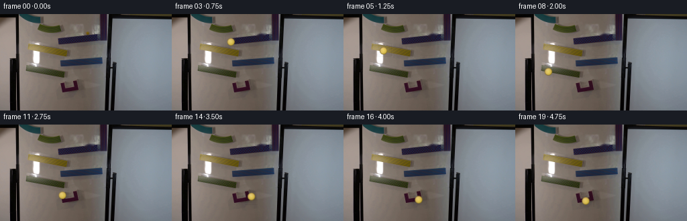
保存候选 4 份；完成命令 32 次；可验证图片返回 32 张。原始 API 响应与完整日志保留在本地。